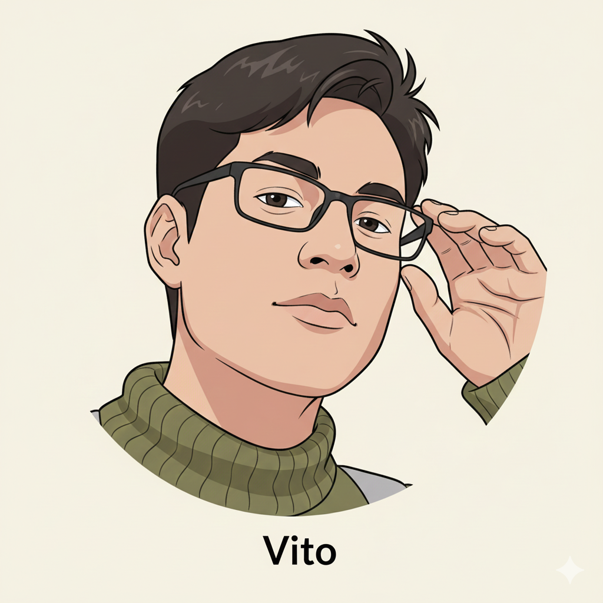
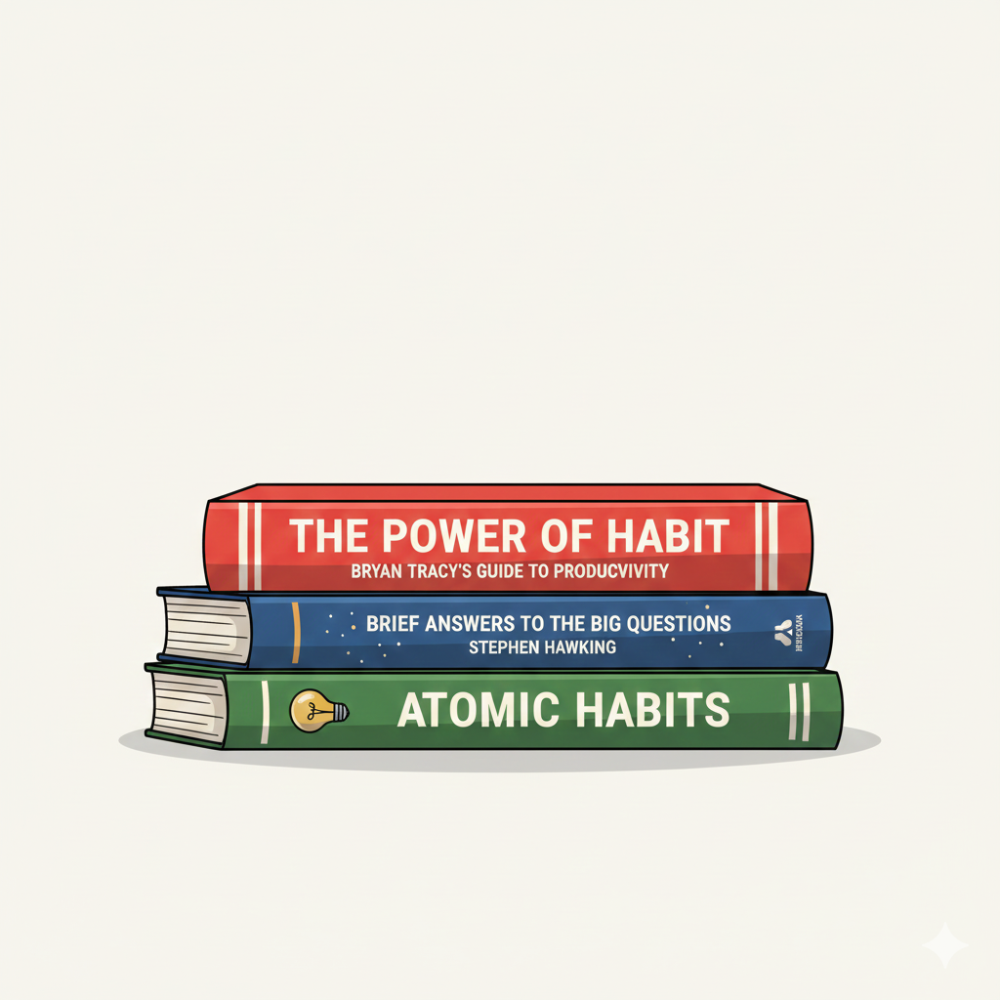
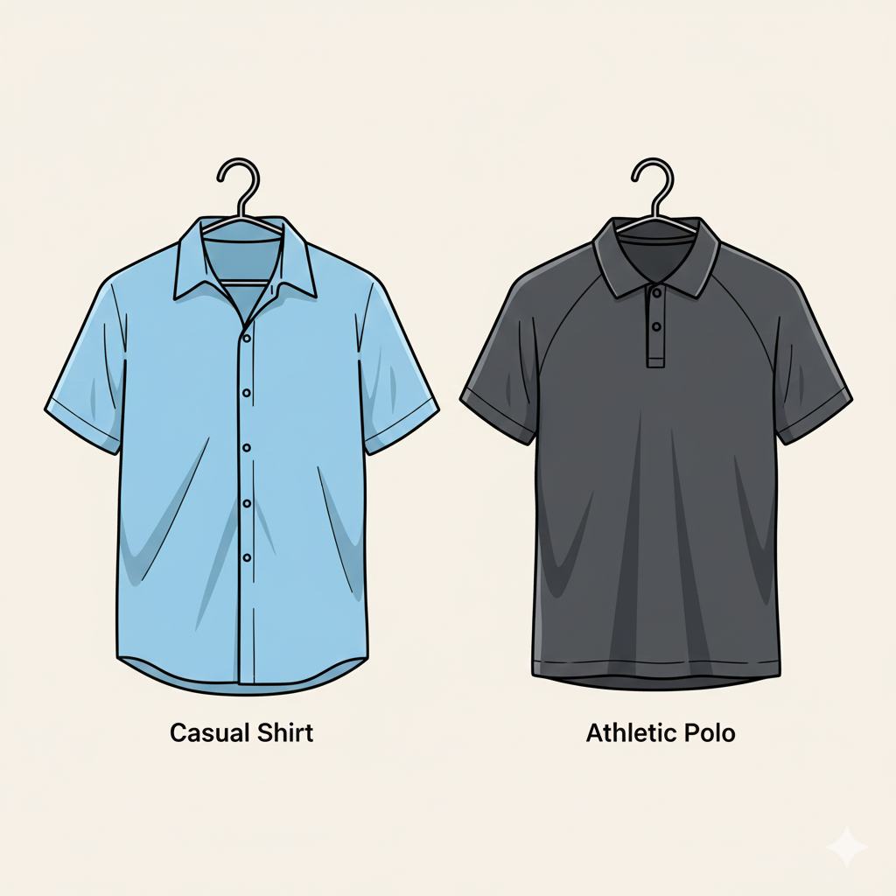
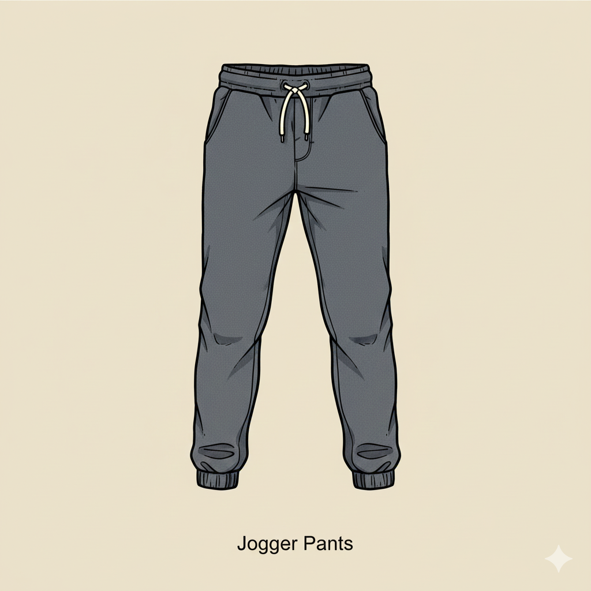
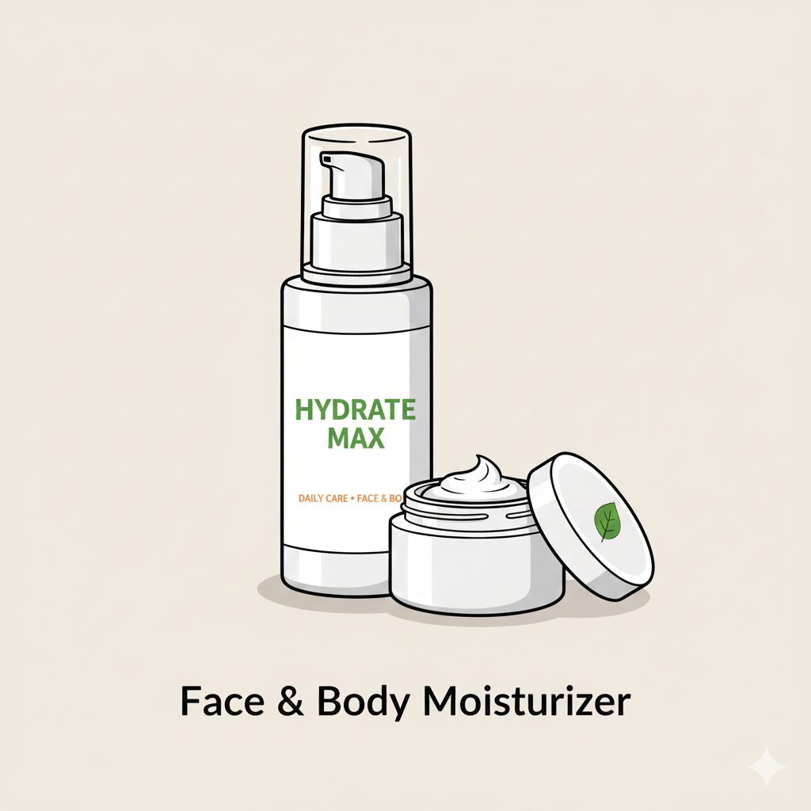
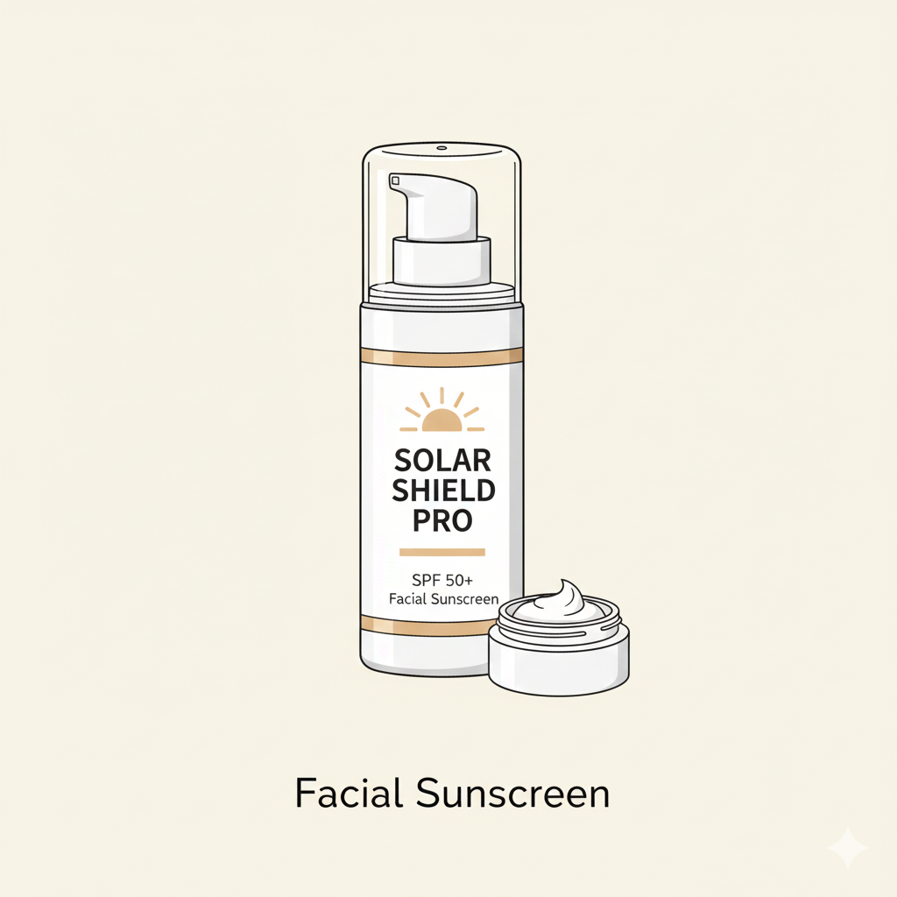
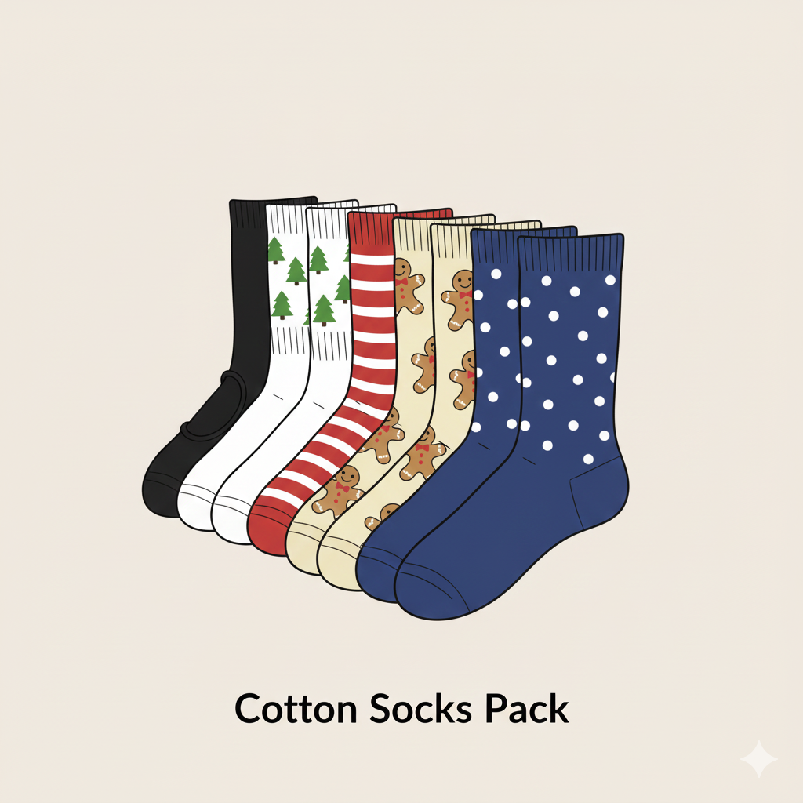

Lista de Deseos de Vito (Confort y Estilo)
Vito busca lo necesario para mantenerse activo, cómodo y bien presentado. Su lista incluye lectura motivacional, prendas para deporte/trabajo y elementos esenciales para el cuidado personal.

1. Libro Inspiracional o de Desarrollo Personal
**Detalles:** Libros de autores como **Brian Tracy** (productividad, metas) o **Stephen Hawking** (ciencia popular, cosmos).
**Utilidad:** Nuevas ideas y motivación para el 2024.

2. Camisa Casual o Polo Deportivo
**Detalles:** Una camisa casual de buena marca para reuniones o un polo deportivo de tela transpirable.
**Utilidad:** Versatilidad para el trabajo o el gimnasio.

3. Jaggers (Pantalones Jogger) Cómodos
**Detalles:** Pantalones jogger de tela suave (no jean) para un look deportivo o relajado.
**Utilidad:** Ideales para la comodidad en casa o para salir a hacer recados con estilo.

4. Crema Hidratante Facial/Corporal
**Detalles:** Para el cuidado diario de la piel.
**Utilidad:** Esencial para prevenir la sequedad y mantener la piel saludable.

5. Bloqueador Solar Facial
**Detalles:** Un bloqueador de amplio espectro, de preferencia con toque seco.
**Utilidad:** Fundamental para el cuidado diario contra el sol, previniendo el envejecimiento y el daño solar.

6. Pack de Medias de Algodón (Con o sin diseño)
**Detalles:** Medias de buena calidad, ya sean invisibles, tobilleras o con diseños divertidos.
**Utilidad:** Un básico que siempre hace falta y mejora la comodidad diaria.